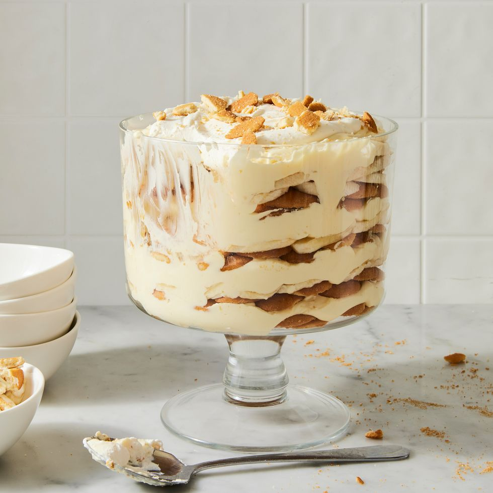

Banana Pudding

Description
Classic banana pudding is a delightful and comforting dessert that layers creamy homemade vanilla pudding with slices of ripe bananas and crunchy vanilla wafers. To create the pudding, you start by cooking a mixture of sugar, flour, salt, and milk over medium heat until it thickens. Tempered egg yolks are then added to the mixture to create a rich and smooth custard. The pudding is flavored with vanilla extract and allowed to cool slightly before assembly.
In a baking dish, you alternate layers of vanilla wafers and banana slices, pouring the warm pudding over each layer to ensure every bite is filled with flavor and texture. Once all the layers are complete, a generous topping of freshly whipped cream, sweetened with powdered sugar and vanilla, is spread over the top. The assembled dessert is then chilled for a few hours to allow the flavors to meld and the pudding to set, resulting in a luscious and satisfying treat that is perfect for any occasion.
Ingredients
- Pudding:
3/4 cup granulated sugar
1/3 cup all-purpose flour
A pinch of salt
4 cups whole milk
4 large egg yolks, lightly beaten
2 teaspoons vanilla extract
- Layers:
1 box vanilla wafers (about 12 ounces)
4-5 ripe bananas, sliced
- Topping:
1 cup heavy whipping cream
2 tablespoons powdered sugar
1 teaspoon vanilla extract
Steps
- Prepare the Pudding:
In a medium saucepan, combine the sugar, flour, and salt.
Gradually whisk in the milk until smooth.
Cook over medium heat, stirring constantly, until the mixture begins to thicken and bubble.
In a separate bowl, lightly beat the egg yolks.
Gradually whisk a small amount of the hot milk mixture into the egg yolks to temper them.
Return the egg mixture to the saucepan and continue to cook, stirring constantly, until the pudding is thickened (about 2-3 minutes).
Remove from heat and stir in the vanilla extract.
Let the pudding cool slightly.
- Assemble the Banana Pudding:
In a 9x13 inch baking dish, spread a layer of vanilla wafers on the bottom.
Top with a layer of sliced bananas.
Pour a layer of the warm pudding over the bananas, spreading it evenly.
Repeat the layers (wafers, bananas, pudding) until all ingredients are used, ending with a layer of pudding on top.
- Prepare the Whipped Cream:
In a chilled mixing bowl, combine the heavy whipping cream, powdered sugar, and vanilla extract.
Beat with an electric mixer on high speed until stiff peaks form.
-
Top and Chill:
Spread the whipped cream over the top layer of pudding.
Refrigerate for at least 2-3 hours, or until thoroughly chilled and set.
- Serve:
Serve the banana pudding chilled.
Garnish with extra vanilla wafers or banana slices if desired.
Enjoy!